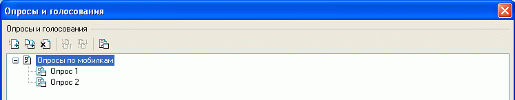
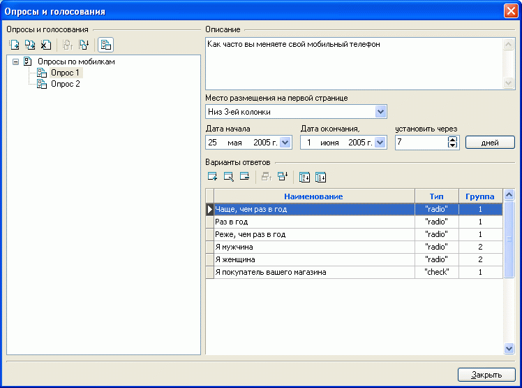
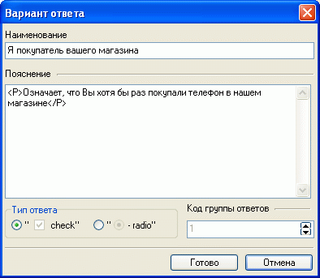
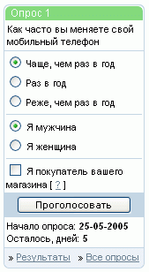
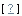
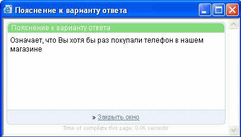
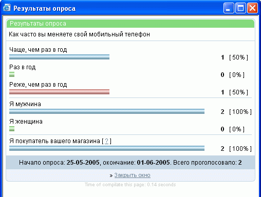

Для выяснения мнения и интересов посетителей интернет-магазина служит имеющаяся в программе Melbis Shop система опросов и голосования. Указанная система реализована в виде размещаемых на первой странице магазина блоков. Эти блоки предварительно необходимо создать.
В левой части окна "Опросы и голосования", вызываемого из главного окна "Дополнительно - Опросы и голосования", отображается дерево опросов и голосования. Опросы и голосования могут группироваться в разделы. Разделы и сами опросы/голосования можно добавлять, удалять, переименовывать, группировать, сортировать.

Для обозначения того, чем - разделом или опросом/голосованием - является вновь созданный объект, служит кнопка , расположенная над деревом опросов/голосований. Раздел не имеет своих значений, а только группирует схожие подразделы или опросы/голосования. Сам же опрос/голосование имеет описание и ряд параметров, определяющих место его размещения на первой странице, дату начала и окончания отображения данного опроса/голосования. Дату окончания можно задать в явном виде - опция "Дата окончания", либо в количестве дней от даты начала - опция "установить через... дней". Дополнительные места размещения опросов могут быть определены в редакторе дизайн-макетов и мест размещения данных.

Здесь же задаются варианты ответов и при необходимости пояснение:

При выборе типа ответа "check" или "radio" следует учесть, что "check" предполагает возможность положительного ответа на один или несколько вопросов одной группы, тогда как "radio" дает возможность положительного ответа только на один вопрос группы.
Каждый опрос может включать в себя несколько групп.
Внешний вид блока опроса/голосования может иметь следующий вид (дизайн страницы с указанной формой может отличаться от приведенного):

Знак

после текста опроса, как на вышеприведенной иллюстрации после "Я покупатель вашего магазина", означает, что к данному вопросу имеется пояснение, ознакомиться с которым можно в новом окне, кликнув на этом знаке:

После ответа на вопросы опроса/голосования посетитель должен нажать кнопку "Проголосовать". После нажатия кнопки "Проголосовать" посетителю интернет-магазина будет выдана информация о текущих результатах опроса:
